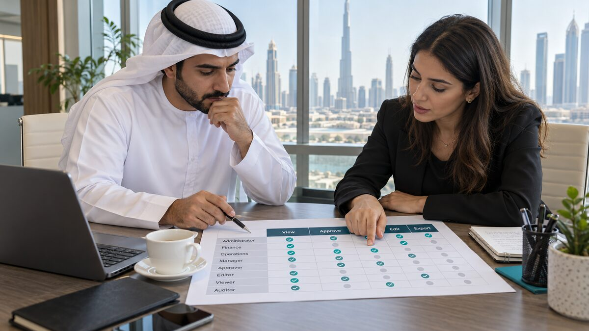

Secure custom software for UAE businesses begins with deciding who may do what, which data they may reach and how the system behaves when demand or a dependency changes. Choosing a cloud provider and adding login screens are not enough. Access rules, tenant isolation, audit evidence, recovery and capacity need to be part of the product design.
I have worked on multi-role products where administrators, managers, customers and internal teams need different views of the same system. In products such as CultureAI and BWL League, the difficult part is not creating a role called admin. It is making sure every page, API route, database query and background task applies the same business rule.
This guide explains how I would plan secure custom software in the UAE in 2026. It covers role-based access control, database enforcement, scalable cloud architecture, audit trails, backup testing and UAE-specific data decisions. The goal is a system that can grow without turning security into a collection of exceptions.
Start with the business access model
Before selecting frameworks, I map the people, resources and actions in the product. A useful access model answers four questions: who is making the request, which organisation they belong to, what resource they are acting on and which action they want to perform.
A simple permission matrix makes hidden assumptions visible. A finance approver may view and approve invoices but not change user roles. A support agent may view selected customer details but not export an entire tenant. A manager may read team reports without seeing another department's private records.
| Role | Typical access | Important restriction |
|---|---|---|
| Organisation owner | Billing, users and organisation settings | Cannot access another organisation |
| Manager | Team workflows and approved reports | Limited to assigned teams |
| Operator | Create and update operational records | Cannot approve their own sensitive action |
| Auditor | Read records and audit history | No operational write access |
| Support | Time-limited troubleshooting access | Must be approved and recorded |

Roles should not become permanent shortcuts
Role-based access control works well when roles reflect stable responsibilities. It becomes difficult when every exception creates another role. I normally combine a small set of roles with attributes such as organisation, team, record ownership, workflow state and approval limit.
The OWASP Authorization Cheat Sheet recommends least privilege, deny by default and validation on every request. It also explains why attribute or relationship checks can complement basic RBAC when business rules depend on the resource and context.
Enforce access at every boundary
Hiding a button is useful for the interface, but it is not security. A user can call an API directly or change an identifier. The server must authenticate the user, derive the trusted tenant and role context, then authorize the requested action against the actual resource.
I keep tenant identifiers out of client-controlled decisions. If an endpoint receives organisationId, the server still verifies that the signed-in user belongs to that organisation. Object lookups include the tenant boundary, so changing a record ID cannot cross into another customer's data.
For PostgreSQL and Supabase applications, Row Level Security provides another enforcement layer inside the database. The official Supabase RLS documentation describes policies as rules applied whenever a table is accessed. Grants determine which operations a role may attempt, while policies determine which rows the operation may affect.
alter table public.projects enable row level security;
create policy "tenant members read projects"
on public.projects for select
to authenticated
using (
organisation_id = public.current_organisation_id()
and public.has_project_access(id, auth.uid())
);The helper functions in this example must use trusted membership data and be tested for both allowed and denied cases. Administrative keys that bypass RLS stay on the server and never reach the browser.
My guide on IT company Dubai access patterns explains how I structure multi-role Supabase policies for admin, team and user workflows. The important lesson is that a passing happy-path test is not enough. Every sensitive operation needs tests proving the wrong tenant and wrong role are rejected.
Design cloud architecture around failure
Scalable cloud architecture is not a diagram with the largest number of managed services. I start with the smallest architecture that provides clear boundaries, observability and a path to add capacity.
A typical first production version may use stateless application instances, a managed relational database, object storage, a queue for long-running work and a cache only where measurements justify it. Sessions and job state should not live only in one application process. Any healthy instance should be able to serve the next authorized request.
Scale also needs limits. Every API endpoint should have bounded pagination, request-size controls and timeouts. Database connection pools need a budget across all running instances. Email delivery, file processing, reports and AI tasks should move to durable background jobs with controlled concurrency, retries and dead-letter handling.
The Azure scale-out guidance recommends horizontal scaling, avoiding instance stickiness and designing long-running work so another instance can continue it. The AWS Well-Architected Framework adds reliability, security, performance efficiency, operational excellence and cost as connected design concerns.
Plan recovery before promising availability
High availability and disaster recovery are different. More application instances can protect against one process failing, but they do not recover deleted data or a bad deployment. I define a recovery point objective for acceptable data loss and a recovery time objective for acceptable downtime. Backups, point-in-time recovery and deployment rollback then support those business targets.
A backup is only useful if it can be restored. Recovery exercises should verify the database, object files, encryption keys, configuration and external integrations needed to make the application useful again.
Make security operational, not decorative
Production security needs evidence. Structured logs should record authentication events, denied access, role changes, sensitive exports and administrative actions. An audit event needs the actor, tenant, action, target, result and time, with request identifiers that connect it to application logs.
I separate audit history from ordinary debug logs. Debug logs may be sampled or deleted quickly. Audit records need defined retention, restricted access and protection against silent modification. They should contain enough context for investigation without copying passwords, access tokens or unnecessary personal data.
Secrets belong in a managed secret store or protected environment configuration, not source control. Production access should use individual identities, multi-factor authentication and short-lived credentials where possible. Break-glass access needs approval, expiry and review.
The NIST Zero Trust Architecture explains that network location alone should not grant trust. For custom software, that means verifying the user, device or service identity and enforcing least-privilege decisions close to the protected resource.
Service-to-service tools require the same discipline. My software development company UAE security guide covers scoped tool permissions, approval boundaries, secrets and audit logging for MCP and AI integrations.
Make UAE data decisions early
UAE businesses should classify their data before choosing regions and vendors. Customer contact details, employee records, payment references, health information and identity documents do not carry the same risk. The data map should show what is collected, why it is needed, where it is stored, which providers receive it and how long it remains.
The UAE Government's official cyber laws page lists Federal Decree-Law No. 45 of 2021 concerning personal data protection. Requirements can also vary by sector, free zone, contract and customer. A qualified legal or compliance adviser should confirm which rules apply; architecture should make those decisions possible to implement.
The UAE Information Assurance Regulation provides useful risk-based guidance for access control and cloud environments. It calls for defining cloud information-security requirements, understanding where sensitive information is stored and transmitted, addressing retention and incident communication, and including cloud services in risk assessment.
This does not mean every UAE application must use one specific region or architecture. It means the choice should be documented. Data residency, encryption ownership, vendor access, backups, cross-border transfers and deletion need answers before production data arrives.
Businesses looking for app development Dubai support should also ask how browser security, server actions, dependencies and deployment configuration are tested before launch.
Secure custom software checklist for UAE businesses
Businesses often search for a software company UAE partner after requirements are already written. I would bring the engineering and security questions into discovery instead. The answers affect cost, delivery order and what the first release can safely support.
| Decision | Question to answer | Evidence before launch |
|---|---|---|
| Identity | How are users and services authenticated? | MFA rules, session tests and credential lifecycle |
| Authorization | Which role can perform each action on each resource? | Permission matrix plus allow and deny tests |
| Tenancy | How is organisation data isolated? | Tenant-scoped queries, RLS and cross-tenant tests |
| Cloud capacity | What fails first as usage grows? | Load test, limits, queues and monitoring thresholds |
| Data governance | Where does sensitive data travel and remain? | Data map, retention rules and vendor register |
| Recovery | How much loss and downtime are acceptable? | Restore exercise, rollback plan and ownership |
| Operations | Who investigates access or service failures? | Alerts, runbooks, audit records and escalation path |
I also recommend launching permissions in stages. Start with the minimum roles required for the first real workflow. Review denied actions and support requests. Add access deliberately instead of opening broad permissions because a deadline is close.
Practical takeaway
Secure custom software is a connected system. The interface, API, database, cloud platform and operating process must agree on identity, tenant, permission and ownership. RBAC provides a useful foundation, while resource attributes and database policies handle the detail that job titles cannot express.
For scalable cloud architecture, keep application instances replaceable, move long work to controlled queues, protect database capacity and test recovery. For UAE deployment, map the data and regulatory context early enough to influence vendor, region, retention and access decisions.
If you are planning secure custom software for a UAE business and want a practical architecture before development expands, send me the workflow, users and integrations you need to support.

Written from production experience